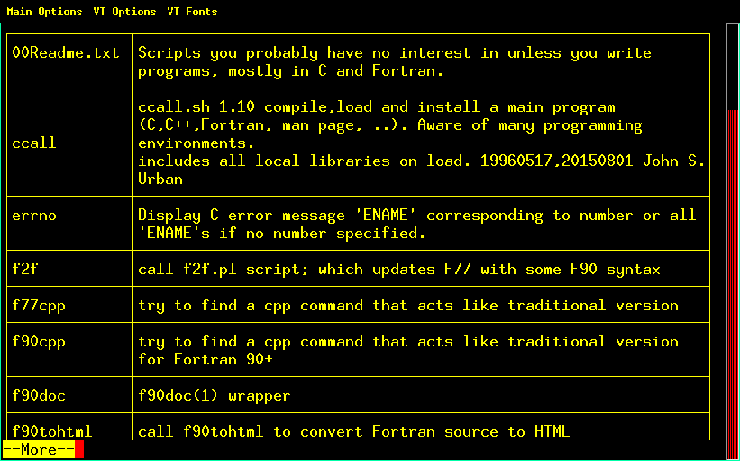

If you need the what(1) command but it is not available on your platforms, this download contains a Fortran-based version in source form.
What does the what(1) command do? It lets you extract descriptions of files from almost any file type if you place the data in the files using a simple standard convention. This metadata would usually include such information as a short description of the file, an author or originator, a version number, and a revision date. The what(1) command lets you see that metadata even when making a query from a non-compatible system -- without having to execute applications (such as a --help or --version switch on an executable command might provide).
That is, just as you use the file(1) command along with magic(5) strings in your files to identify what types of files you have, you can use the what(1) command to see file-specific information that has been placed in the file.
More specifically, the what(1) command searches through files to find "SCCS identification strings". An SCCS identification string begins with "@(#)" and continues until a non-printable character (including a new-line) is found, or one of the following characters are found: ", > or \,
To get a taste for the power of such a standard as the SCCS identification string, take a directory with some simple scripts or source files in it, enter a short description in a comment of the form
@(#)name - short description
in the script files, and then use what(1) or even "grep '@(#)' *" on the directory. you will get a taste of why adapting a standard description key such as '@(#)' is useful.
If you have built the what(1) command contained in this document, you can display a nicely formatted display in most terminal windows using a command like ...
cd scripts_programming # generate HTML and format it in a terminal window with w3m(1) (or links(1), lynx(1), ...) what * -html -q|w3m -dump -T text/html|more
Or, you could redirect the output into a file and launch a browser to see the file. A sample output run in a small directory of bash(1) shell scripts follows (Note that the files are created as links so you could normally click on the files)):
| ccall |
ccall.sh 1.10 compile,load and install a main program
(C,C++,Fortran, man page, ..). Aware of many programming
environments. |
| errno |
Display C error message 'ENAME' corresponding to number or all
'ENAME's if no number specified. |
| f2f |
call f2f.pl script; which updates F77 with some F90 syntax |
| f90doc |
f90doc(1) wrapper |
| f90tohtml |
call f90tohtml to convert Fortran source to HTML |
| fb90 |
Use emacs(1) to auto-ident free-form Fortran files like cb(1) for C |
| fileinfo |
do an ls(1), file(1), what(1), numdiff(1), size(1), ar(1) and ldd(1) on a file |
| fmkmf |
This is a utility to generate make files for Fortran 90. |
| generate_make |
Program to generate Makefile from *.f and *.f90 files found in the current working directory. |
| html2C |
html2C.sh Strip C from a specially formatted HTML-2 document : 1.0 19960517 John S. Urban |
| html2f |
Strip FORTRAN from specially-formatted HTML document (1.0 19960517 John S. Urban) |
| html2f90 |
Strip FORTRAN90 from specially-formatted HTML document(1.0 19960517 John S. Urban) |
| html2py |
Strip python from specially-formatted HTML document(1.0 20150113 John S. Urban) |
| ldds |
recursive list of dynamic library loads |
| makemake |
Generate a Makefile from the sources in the current directory.
The source files may be in either C, FORTRAN 77, Fortran 90 or
some combination of these languages. Usage: makemake [program_name [F90 compiler or fc or f77 or cc or c]] |
| manf |
edit the Fortran reference manual in text form |
| myflint |
run flint(1) if you have it, or use compiler to emulate it as
much as possible (flint(1) is a Fortran code static checker) |
The what(1) command originated as a part of the source code management system SCCS. When SCCS was the dominant source code management system, the SCCS ID strings automatically generated by the SCCS get(1) command and displayed by the what(1) command became a de-facto standard.
Importantly, because the what(1) command was so useful it was frequently used outside of SCCS.
So the what(1) command was available pre-installed on most Unix platforms for years, as SCCS was once nearly ubiquitous. Unfortunately, the what(1) command is getting harder to find, as the use of SCCS on Linux platforms is not all that common. You can typically install SCCS or a SCCS-like program that comes with what(1) but that is overkill if all you want is what(1). (This is particularly true if you do not use code history utilities, or are already using an alternative (RCS, SVN, git(1), hg(1), ...).
regrettably no strongly supported standard for embedding descriptive information into (almost) all file types (especially object files, libraries, executables and binary data files) has emerged as the availability of the what(1) command has declined.
The related ident(1) command is really part of RCS, and so suffers from the same availability issues as what(1).
The C/C++ "#ident" and "#pragma ident" directives try to provide similar functionality for C, but implementation varies (a lot) between different PE(Programming Environments), and this feature only works for C/C++ code.
Such a standard as the SCCS identification string provides is indispensable for building utilities that allow you to universally track the pedigree of files. It lets you embed keys that a system of other custom utilities can then use to automatically generate file inventories; create indices for software source files, and tie information together via a database that lets you track project releases even when sources are in a variety of languages (Fortran, C/C++, bash, perl, python, javascript, HTML, ...) maintained with a variety of revision control products. That is, essentially every source code and critical data file has a lot of information embedded in it, including a unique key that can be used with a centralized database that lets you quickly tie a file to documentation, contact information, revision history, and so on.
Such stringent tracking requirements are rare, but it is still nice to cd(1) into a directory of scripts, code, and binaries and get a quick TOC(Table of Contents) just by entering something like the what(1) command.
There are other sources for the original what(1) command or look-alikes. My own version is written in Fortran. The major difference between it and the original is that it can generate HTML output. It is a PD (Public Domain) source. It has been tested with gfortran( GNU Fortran (GCC) 4.9.3). It displays user documentation with the --help switch. So you need to grab the WHAT code and M_KRACKEN, M_STRINGS, and M_VERIFY Fortran modules from this site as well to build the application.
Pure metadata is information not used by the system to use the file. Metadata (metacontent) is typically defined as the data providing information about one or more aspects of the data, such as:
It is typically easy to embed SCCS ID strings into text files, often as comments in interpreted files. Compiled programs can be more difficult, as unused strings are often eliminated by compilers during optimization. The help text for the what(1) command gives some tips on working with compiled files.
It is not too difficult to locate and change the metadata string without otherwise changing the file (this will typically work even with binary files). But some files contain checksums or for other reasons cannot easily be changed once created. So if you want to track and update file data that is subject to frequent change consider including a "signature" in the sense of a UUID (Universally Unique ID); and keeping the metadata that has changed in a repository such as an SQLite file. This is particularly useful if ownership or contact information, or production status changes frequently, for example.
The original Dublin Core Metadata Element Set consists of 15 metadata elements:
Wikipedia contains links to more information on the intended meanings of the keywords.
MSWindows executable metadata includes the names:
Other common metadata formats include EXIF, GPS, and IPTC.
Embedding metadata into executable and relocatable files is currently very dependent on the programming environment. When investigating how best to include metadata into such files note that ELF-format files have a metadata section, and many compiled file formats contain a fixed-string section which is often where metadata is stored.
Most Fortran programming environments will process source files through the cpp(1) program or very similar pre-processors if the source files end in ".F90". You may have a Fortran-friendly pre-processor where you do not have to be as careful with quotes and double-slashes ("//"); but even using cpp(1) (which was designed for C and/or C++) you can use the pre-defined __FILE__, __DATE__, __TIME__ macros and the -D switch on cpp(1) to "automatically" generate an up-to-date SCCS ID string. For example:
!=================================================================================================================================== program testit implicit none ! INFO string might be optimized away if not "used" ! uses (predefined) cpp(1) preprocessor macros; ! assumes used -DVERSION='"VALUE"' preprocessor switch character(len=:),parameter ::info='<@(#)'/& &/__FILE__/& &/'::'/& &/__DATE__/& &/' '/& &/__TIME__/& &/'::V'/& &/VERSION/& &/'>' write(*,*)'Hello World!' write(*,*)info end program testit !=============================================================================== ! $ gfortran -DVERSION='"1.2.3"' cpp.F90 -o a.out # note quoting for VERSION ! $ ./a.out # execute program ! Hello World! ! <@(#)cpp.F90::Feb 1 2016 20:00:04::V1.2.3> ! $ what a.out # Run what(1) command on executable ! a.out: ! cpp.F90::Feb 1 2016 20:00:04::V1.2.3 !===================================================================================================================================
The ar(1) command lets you see what files are in an archive file, which is typically the format static libraries take. A simple script lets you combine the output from ar(1) and what(1):
#!/bin/sh
#@(#)arwhat.sh:run what(1) on each record in an archive file individually
for NAME in $*
do
ar t $NAME|while read FILE
do
echo \
==========================================================================================
echo $(ar tv $NAME $FILE)
ar p $NAME $FILE|what
done
done
exit